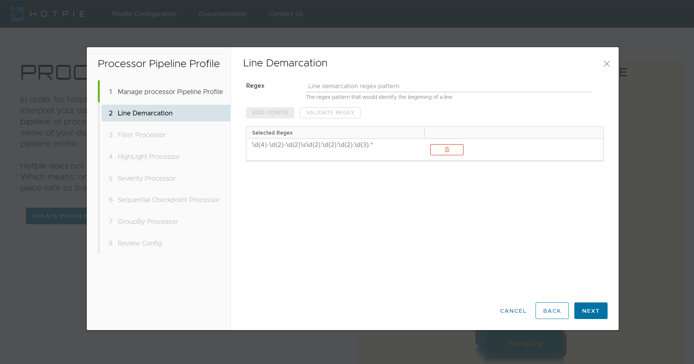

Knowing where the line starts
The first step in starting the analysis of any data is knowing where the first logical entity ends and the
next
one begins. So thats where we start.
With your regex pattern, we can clearly demarcate the individual data units that are, in all aspects one.
Sample Raw Data
The above is an example of how a single unit of information is represented in multiple lines. The regex that
you
will be providing will identify the individual data units.
In our example here, we know that a data unit always starts with a timestamp value such as "2020-06-04 18:35:12.886".
Example Regex Pattern
Profile Configurations
